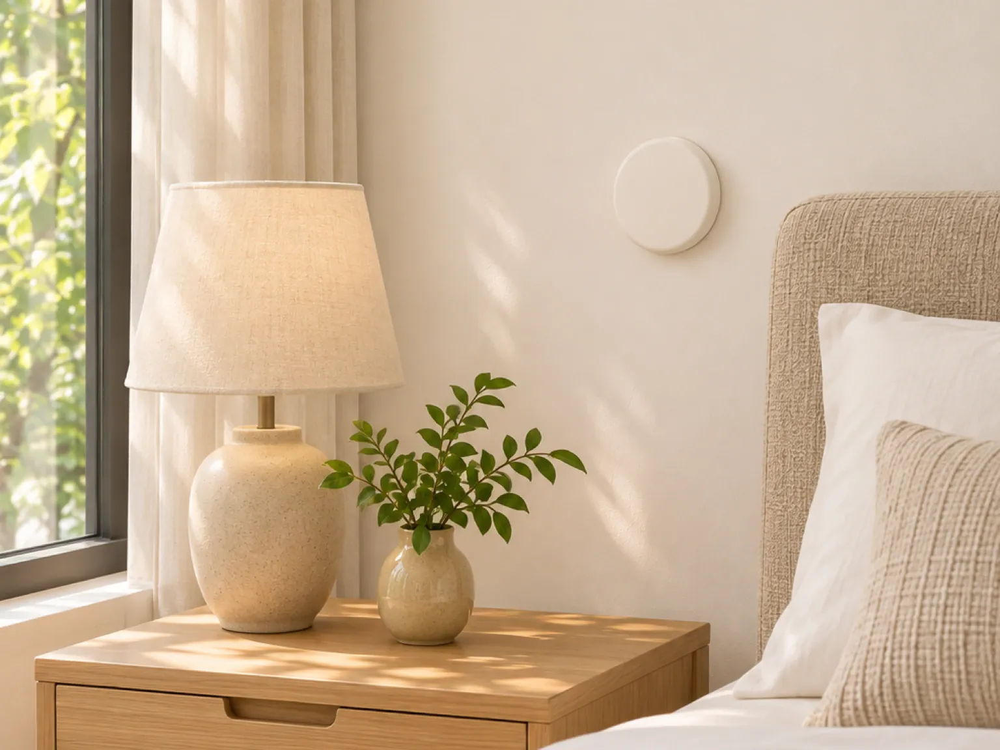
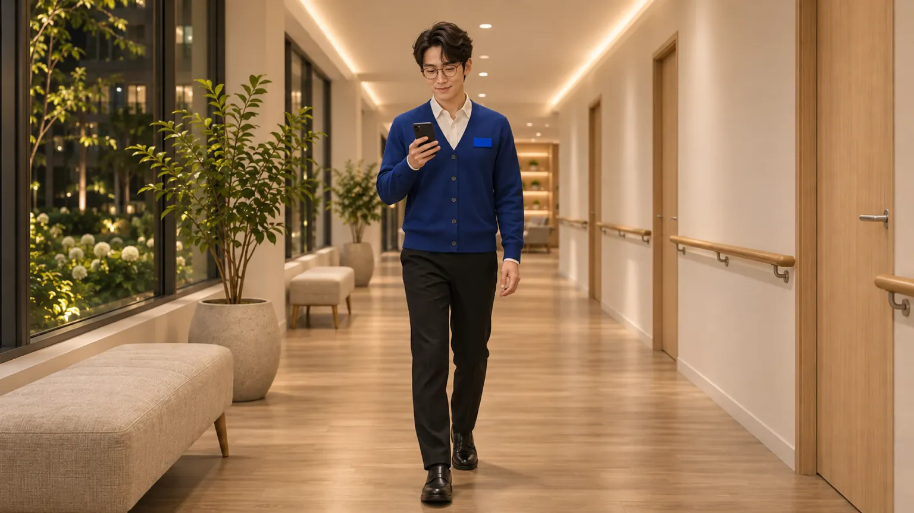
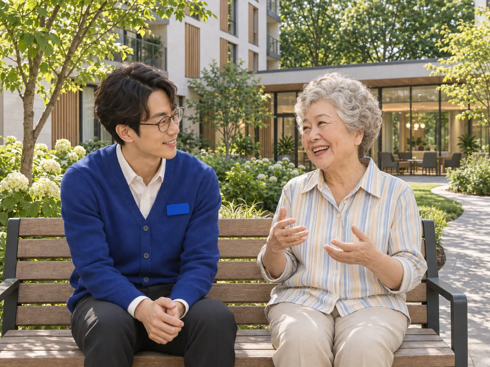
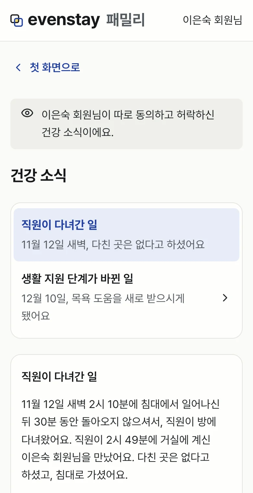

안심·건강 지원
도움이 필요하실 때 누가 무엇을 하는지 미리 알려 드려요.

도움을 부르는 방법
앱을 쓰지 않으셔도 호출벨을 누르시거나 방 전화로 프런트(내선 0번)에 거시면 직원을 부르실 수 있어요.

호출벨
방과 욕실에 있는 호출벨을 누르세요. 당번 직원에게 바로 알려요.
프런트 전화
방 전화로 프런트(내선 0번)에 걸어 주세요. 휴대폰으로는 02-000-0000 (가상 번호)으로 걸어 주세요.
119
급하시면 119에 바로 전화하셔도 돼요.
부르시면 이렇게 움직여요
직원에게 알려요. 호출벨이나 센서 신호는 당번 직원 휴대폰으로 가요. 같은 신호가 여러 번 와도 알림은 한 번 가요.
한 직원이 맡아요. 맡은 직원 이름이 회원님 앱에 보여요.
직원이 회원님을 찾아가요.
한 일을 기록해요.
아무도 맡지 않으면 당번 직원이 바로 받지 못하면 다른 직원에게 알리고, 그래도 맡는 사람이 없으면 책임자와 모든 직원에게 차례로 알려요.
앱과 장치가 상황을 판단하거나 119에 저절로 신고하지는 않아요. 119 신고는 직원이 해요.

부르신 뒤 직원이 어디까지 왔는지 앱의 안심 알림에서 보실 수 있어요.
- 1
직원에게 알렸어요.
- 2
김하진 직원이 가고 있어요.
- 3
다른 직원에게도 알렸어요.
- 4
직원이 다녀갔어요.

병원에 가셔야 할 때
- 1
119 신고는 현장 직원이 해요.
- 2
병원에 가시게 되면 직원이 급할 때 연락할 분께 정해 두신 순서대로 전화드려요.
- 3
전화를 받지 않으시면 문자로 알리고 다시 전화드리도록 기록해 둬요.
- 4
병원으로 가신 시각과 돌아오신 시각을 기록으로 남겨요. 병원 이름과 진료 내용은 적지 않아요.
- 5
건강 소식을 허락하신 가족은 이 기록을 Evenstay 패밀리에서 봐요. 급할 때 연락할 분께는 허락과 상관없이 따로 전화드려요.
진단과 치료는 병원과 119가 해요.
평소에 살펴 드리는 일
별일 없는 날에도 살피는 장치와 직원이 있어요. 어디까지 살필지는 회원님이 동의하신 만큼이에요.
- 침대 센서
- 침대에 계신지 알려 주는 장치예요. 밤에 침대에서 일어나신 뒤 오래 돌아오지 않으시면 직원에게 알려요. 영상이나 소리는 남기지 않아요.
- 호출벨
- 누르시면 당번 직원에게 바로 알려요.
- 출입 기록
- 밤늦게 회원님 출입 카드로 1층 정문을 나가시면 직원에게 알려요.
- 안부 전화
- 신청하신 분께만 전화드려요. 같은 날 전화를 두 번 못 받으시면 직원이 들러요.
침대 센서, 출입 기록, 안부 전화는 회원님이 동의하셔야 연결해요. 호출벨은 동의 없이 늘 쓰실 수 있어요.
안부 방문을 받기로 하신 분께는 직원이 들러 안부를 여쭤요. 원하지 않으시는 날은 직원에게 말씀해 주세요.
오래 비우시는 동안에는 침대 센서, 밤 출입, 안부 방문 알림을 멈춰요.

가족에게 어디까지 알리는지
직원이 다녀간 일은 건강 소식으로 남아요. 누구에게 보여 줄지는 "소식 함께 보기"에서 정하세요.
소식은 직원이 한 일을 기록한 뒤에 올라가요.
프런트에 말씀하셔도 바꿔 드려요.
병원에 가시게 되면 급할 때 연락할 분께 전화드려요. 이 전화는 설정과 상관없어요.

궁금하신 점이 있으면 상담을 신청해 주세요. 숙소와 비용은 상담 때 안내해 드려요.